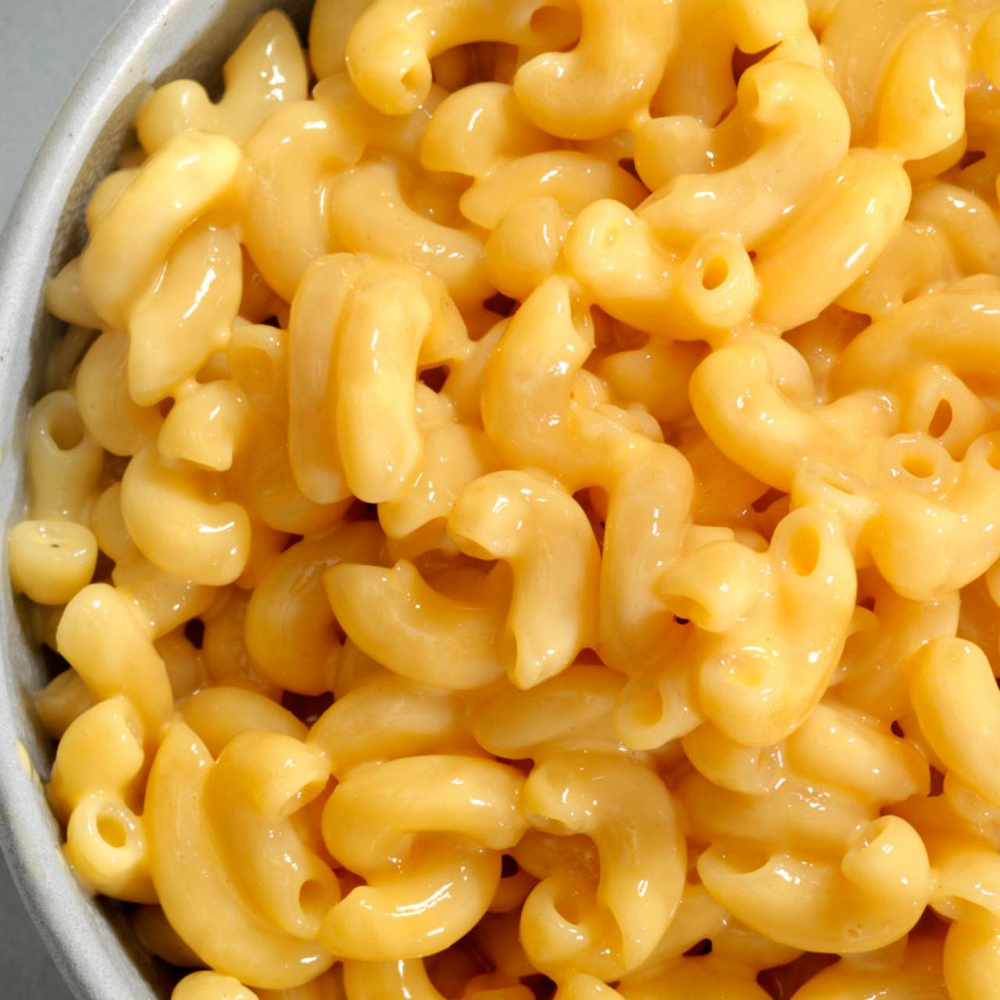

Creamy Mac and Cheese

A classic comfort food, this creamy mac and cheese is sure to satisfy your cravings.
This easy-to-make recipe is a family favorite.
Ingredients
- 1 pound elbow macaroni
- 1/4 cup butter
- 1/4 cup all-purpose flour
- 4 cups milk
- 1 teaspoon salt
- 1/2 teaspoon black pepper
- 2 cups shredded sharp cheddar cheese
Steps
- Cook macaroni according to package directions.
- Melt butter in a large saucepan over medium heat. Stir in flour and cook for 1 minute.
- Gradually whisk in milk until smooth. Bring to a boil, then reduce heat and simmer until thickened.
- Stir in salt, pepper, and cheese until melted and smooth.
- Drain macaroni and add to the cheese sauce. Stir to combine.
- Serve immediately.